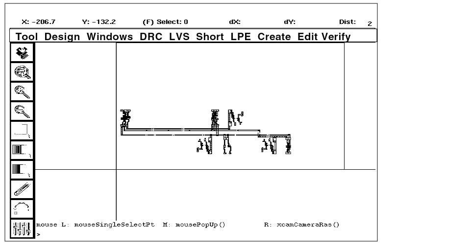

5
Displaying Parasitic Resistance and Capacitance
This chapter discusses parasitic resistance and capacitance in the Dracula® graphical user interface product. The chapter’s main focus is in the following areas:
- About LPE/PRE
- Starting LPE
- Viewing Parasitic Capacitance
- Viewing Parasitic Resistance
- Quitting the Tutorial
- Summary
About LPE/PRE
When you run an LPE or PRE job, Dracula creates files for each of the types of capacitance and resistance extracted. In this chapter, you’ll learn how to use graphical user interface to display Dracula parasitic extraction data. You’ll use the graphical user interface commands to locate and examine parasitics in these files automatically.
The procedures in this tutorial use Dracula output data files, not the original layout data. Because Dracula output data is in a different format, data you’ll see in this tutorial won’t look like your original layout data.
In this chapter, you will learn how to
- Start the Dracula graphical user interface’s LPE
- List nets with the highest parasitic capacitance
- Display nets of your choice
- Display nets with parasitic area and fringe capacitance
- Display nets with parasitic coupling capacitance
- Display parts of a parasitic capacitor
- List nets with the highest parasitic resistance
- Display parts of a parasitic resistor
Starting LPE
Before you start this section, you need to open an empty cell, which is explained in “About the Dracula Graphical User Interface” section in Chapter 1. Once you have an empty cell open, you can go on with this section.
After you open the empty cell, the graphical user interface window appears. The graphical user interface window and the Layer Selection Window (LSW) are the only two windows open. You can ignore the LSW for now.
Looking at Dracula RC Data in the Dracula Graphical User Interface
Now you’ll tell the software where to find your Dracula RC data files.
- Select Tools – Dracula Interactive if necessary.
-
To display the LPE commands, click left on the LPE menu.
Except for the Setup submenu, you cannot enable any of the other submenus in the LPE pull-down menu until you perform step 3. -
Select Setup from the LPE menu.
The LPE Setup form appears.
-
To tell the graphical user interface where to find your Dracula LPE/PRE files, in the Dracula Data Path field, type dracrc.
If you did not start the software in the directory where the Dracula LPE/PRE files are located, you must type the complete path to the files. - Click left on OK.
The RCV window appears on the right.
Now the graphical user interface knows where to find your Dracula LPE/PRE RC data files. Next you’ll list nets with parasitic capacitance.
Viewing Parasitic Capacitance
In this section, you’ll list nets with parasitic capacitance, select a net, and view its capacitance components.
Listing Nets with the Highest Parasitic Capacitance
-
To list nets with the highest parasitic capacitance, from the RCV form, select All Nets and With C.
-
Click the top List button.
The Nets list box lists original nets in order from highest to lowest capacitance. You can scroll through the list of nets with the scroll bar. -
To highlight the nets with the highest capacitance, select Hilite top.
The five nets with the highest capacitance are highlighted in the layout window, because Hilite top is set to 5 by default. You can highlight up to nine nets with the highest capacitance by filling in a number of your choice, from 1 to 9, in the Hilite top field. -
To zoom in on the highlighted nets, click Fit Current Hilite.
Now that you’ve listed all the nets with the highest capacitance, you’re ready to list specific nets to view.
Listing Specific Nets
When you only want to look at certain nets, you can list the nets you want to display in an ASCII text file.
-
With a text editor such as vi, emacs, or textedit, create a text file in the dracrc subdirectory that contains the following lines:
?o64 ?o21 ?o88
- Save the text file as TARGET.DAT.
-
In the RCV form, select Target Nets, then click the top List button.
The nets you listed in TARGET.DAT are displayed in the Nets list box.
- In the RCV form, experiment by selecting With C and List; With R and List; and Original and List.
You just listed nets that can be displayed. Next you’ll select a single parasitic capacitance net to display.
Displaying Capacitance Components for a Net
To display capacitance components, you select a net from the Nets list box. You will then list the capacitance components for this net and highlight them.
- In the RCV form, click Clear All.
- Select All Nets and With C, then click List.
-
To select a net with components to view, click on the fourth net listed in the Nets list box, original net 15 (?o15).
The net is highlighted in the graphical user interface layout window. Because C is selected, a C’s list box opens to list the components of parasitic capacitance to the target net.
-
To highlight an area or fringe component of parasitic capacitance to the target net
- Be sure C is selected.
-
In the C’s list box, scroll down and click on the following component:
:20 ?o18:11 Z 7.59495E+02
- To unhighlight the component, click Remove next to the C’s list box.
- To highlight a component of capacitance to ground for the target net
-
To highlight a component of coupling capacitance for the target net
A corresponding C’s list box lists the different capacitance components for this coupling capacitance.
Now that you are able to view the different parasitic capacitance components for a selected net, you might want to find out what a component is and how it was extracted.
Getting Information About Capacitance Components
-
To list the extraction rule that created a capacitance component, in the RCV form
-
Click on the following component in the C’s list box under the Aggressors list box:
:15 ?o18:17 Z 8.77355E+02 - Click Explain.
-
Click on the highlighted shape in the layout window.
-
Click on the following component in the C’s list box under the Aggressors list box:
-
List the area and fringe components of net ?o15 by clicking the C button.
-
In the C’s list box, scroll down to the following component and click on it.
:21 ?o18:19 Z 7.52957E+02
-
To see how the parts of a parasitic capacitor were extracted, use Term 1, Term 2, and Whole to highlight the terminals of the capacitor listed in the C’s list box.

-
Click Clear All.
When you’re finished seeing how Dracula extracted parasitic capacitors, you’re ready to display parasitic resistance.
Viewing Parasitic Resistance
Now that you’ve looked at nets with parasitic capacitance, you’re ready to look at nets with parasitic resistance. You’ll follow very similar procedures.
Listing Nets with the Highest Parasitic Resistance
- To list nets with the highest parasitic resistance, from the RCV form, select All Nets and With R.
-
Click List.
The Nets list box lists original nets in order from highest to lowest resistance. You can scroll through the list of nets with the scroll bar. -
To highlight the nets with the highest resistance, select Hilite top.
The five nets with the highest resistance are highlighted in the layout window, because Hilite top is set to 5 by default. You can highlight up to nine nets with the highest resistance by filling in a number of your choice, from 1 to 9, in the Hilite top field. -
To zoom in on the nets, click Fit Current Hilite.
 - Click Clear All.
Displaying Resistance Components for a Net
-
Click on ?o15, the first net listed in the Nets list box.
The net is highlighted in the graphical user interface layout window. Because R is selected, an R’s list box opens to list the components of parasitic resistance to the target net.
-
To highlight a component of parasitic resistance to the target net, click on RR483, the first item in the R’s list box.
The current component is highlighted in white. - To remove the highlighting, click the Remove button for the R’s list box.
Getting Information About Resistance Components
-
Click on RR491, the second component in the R’s list box.
The first is unhighlighted, and the second is now highlighted in white. - To list the extraction rule that created a resistance component, in the RCV form
-
To view the parts of a parasitic resistor, use Term 1, Term 2, Body, and Whole to highlight the terminals of the resistor listed in the R’s list box.
Quitting the Tutorial
At this point, you might want to continue working with the graphical user interface. If you’d like to continue, you can leave the windows you used for the tutorial on the screen, or you can close them. If you want to close the windows, go to the
When you are ready to quit the Cadence software, go to the
Summary
You’ve now finished the Dracula Graphical User Interface Tutorial.
In this chapter, you learned how to use graphical user interface to list and display parasitic capacitance and resistance in a design. Specifically, you learned to
- Start the graphical user interface’s LPE
- List nets with the highest parasitic capacitance
- Display only the nets listed in a text file
- Display nets with parasitic area, fringe, and coupling capacitance components
- Get information about capacitance components
- List nets with the highest parasitic resistance
- Get information about resistance components
- Quit the tutorial
Return to top